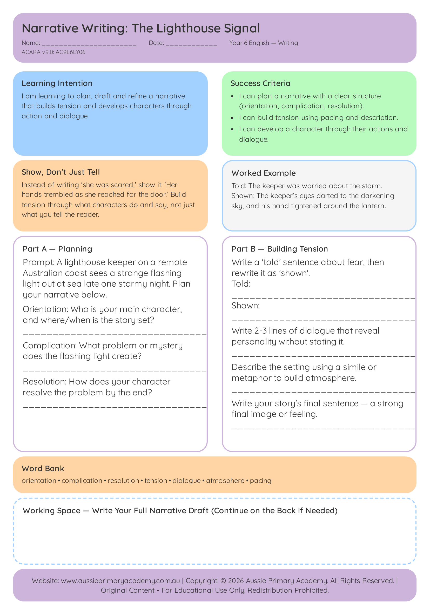

Year 6 · English · Free Printable
Narrative Writing: The Lighthouse Signal
Plan and draft a tension-building narrative using structure, pacing and character development.
Worksheet Preview

Learning Intention
Students plan and draft a narrative using tension, pacing and character development.
Australian Curriculum
Supports Year 6 English learning. (AC9E6LY06)
Teacher Notes
Discuss how authors build tension before students begin planning their own story.
Skills Practised
- Narrative structure
- Building tension
- Character development
What Students Will Practise
- Planning a narrative with clear structure
- Building tension and pacing
- Developing characters through action and dialogue
- Drafting a controlled narrative response
How to Use This Worksheet
- Classwork: Guided planning followed by independent drafting.
- Homework: Complete the draft or revise for tension and clarity.
- Revision: Practise narrative structure before assessment.
- Small-group support: Share plans and model how to build tension.
Related Year 6 English Resources
Continue building writing and reading skills.
- Year 6 · English
Writing
Persuasive Writing
Structure a persuasive argument using evidence and PEEL paragraphs.
View Worksheet - Year 6 · English
Grammar
Active and Passive Voice
Recognise and use active and passive voice for purpose and effect.
View Worksheet - Year 6 · English
Year Level Hub
Year 6 English Worksheets
Browse all free Year 6 English worksheets.
Explore Year 6 English